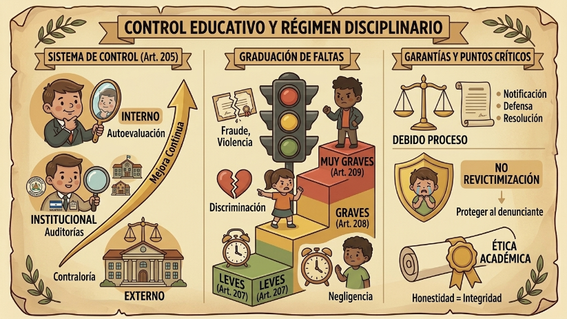

El "control" en el sistema educativo (Art. 205) es un engranaje complejo. No solo se trata de sancionar, sino de una mejora continua orientada a la calidad. Esta vigilancia se despliega en tres niveles: Interno, mediante la autoevaluación (el espejo de la institución); Institucional, donde el Ministerio despliega auditorías técnicas y procesos de intervención cuando el sistema falla; y Externo, que incluye la fiscalización de organismos como la Contraloría General del Estado para garantizar que los recursos públicos se usen de forma ética y transparente.

La Ética como Eje del Proceso Sancionador
Cuando se habla de infracciones (Art. 206), es vital entender que no son simples "reglas rotas". Son atentados contra el derecho a una educación digna. En todo proceso sancionador, el debido proceso es el límite infranqueable. Ninguna autoridad puede sancionar de forma arbitraria; debe haber una notificación previa, derecho a presentar pruebas de descargo y una resolución debidamente motivada.
Graduación de las Faltas: ¿Qué está en juego?
He clasificado las infracciones según su impacto en el proyecto de vida del estudiante:
Faltas Leves (Art. 207): Son mayormente de índole administrativa o de convivencia básica. Incluyen la negligencia en funciones, la alteración del cronograma escolar o la retención indebida de documentos. Son llamadas de atención al orden.
Faltas Graves (Art. 208): Aquí se vulneran derechos fundamentales. La expedición de documentos falsos es fraude puro; separar a un estudiante por discapacidad o maternidad es discriminación sistémica; incentivar el racismo o la violencia es un ataque directo a la formación en valores. Estas faltas ya requieren sanciones administrativas severas.
Faltas Muy Graves (Art. 209): Son conductas que colapsan el sistema. El fraude o deshonestidad académica rompe la esencia del aprendizaje; el cobro de valores por servicios que la ley garantiza como gratuitos es una estafa al derecho ciudadano; y la violencia escolar o la omisión de denuncia (encubrimiento) son conductas que, en muchos casos, trascienden lo administrativo para llegar a la vía penal.